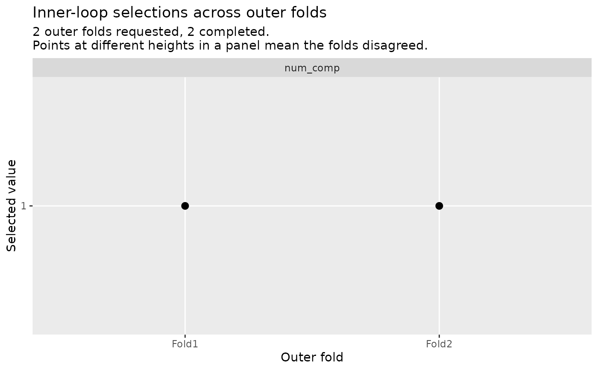
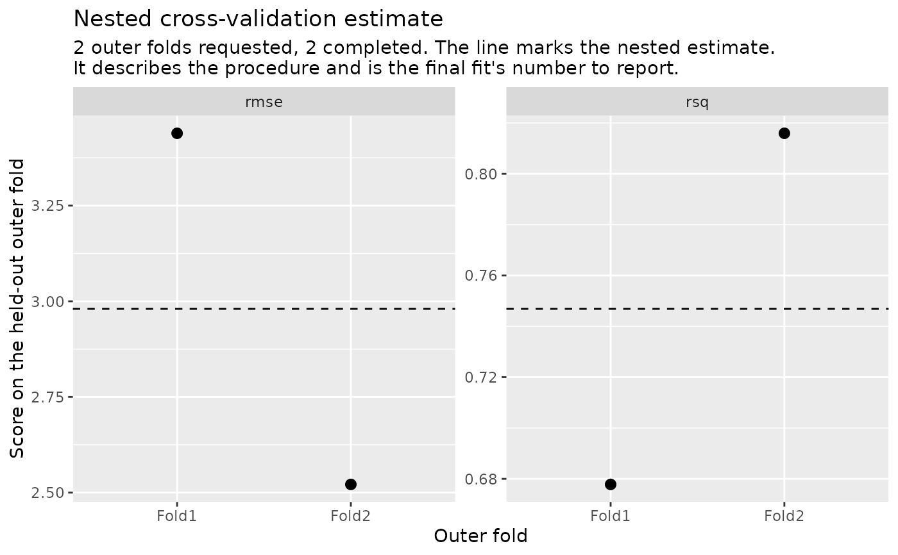
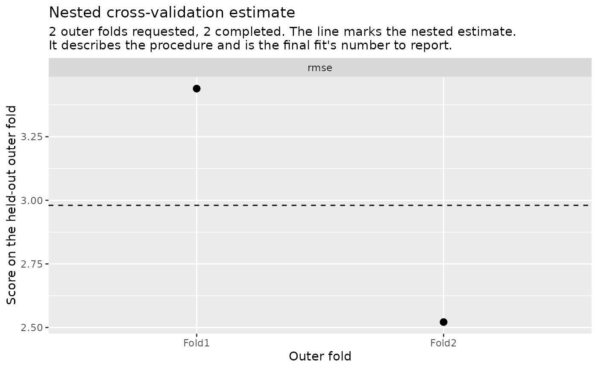

autoplot() draws one point per outer fold: the parameter values each
fold selected, or each fold's score on the rows it held out.
Arguments
- object
A
nested_resultsfromnested_tune_grid()or a related function.- type
Which view to draw:
"parameters"(the default) or"performance".- metric, eval_time
For
type = "performance", the metrics and the evaluation times to draw.NULL, the default, draws them all. A metric that does not depend on time is drawn whatevereval_timenames, as in tune'sautoplot().- ...
Not used, and must be empty.
Details
The outer folds run along the x axis in design order. With
type = "parameters", each panel shows one tuned parameter, and the y
axis is the value each fold selected. A flat row of points means the
folds agreed. Points at different heights mean the tuning procedure picks
different values on different data, which the averaged metrics hide.
With type = "performance", each panel shows one metric, and the y axis
is each fold's score. A line marks the nested estimate that
collect_metrics() reports.
A failed fold keeps its place on the x axis and draws no point. A panel
label such as rmse (from 2 folds) shows that some completed folds gave
no value there, such as an NA score. If no fold completed, the function
gives an error. A run with no tuned parameters, such as a
nested_fit_resamples() result, can only be drawn with
type = "performance".
See also
nested_tune_grid(), print.nested_results(),
collect_metrics(), summary.nested_results_set() for the same two
views of a workflow-set run
Examples
data(mtcars)
rec <- recipes::recipe(mpg ~ ., data = mtcars) |>
recipes::step_pca(recipes::all_predictors(), num_comp = tune::tune())
wf <- workflows::workflow(rec, parsnip::linear_reg())
set.seed(1)
folds <- nested_resamples(
mtcars,
outside = rsample::vfold_cv(v = 2),
inside = rsample::vfold_cv(v = 2)
)
set.seed(2)
res <- nested_tune_grid(wf, folds, grid = data.frame(num_comp = 1:2))
autoplot(res)

autoplot(res, type = "performance")

autoplot(res, type = "performance", metric = "rmse")
